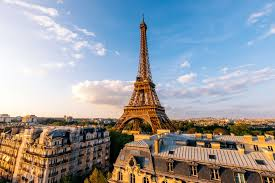
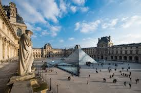
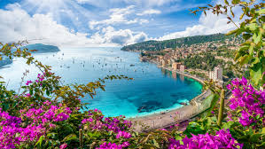

MENARA EIFFEL
Menara Eifel
Menara ini dibangun pada 1889 sehingga langsung mendapatkan banyaknya gelar di dunia. Dunia global mengakui menara ini sebagai salah satu bangunan buatan manusia tertinggi di dunia.
Museum Louvre
Museum ini adalah galeri seni nasional Prancis. Museum ini menampung banyak karya seni ikonik dari berbagai seniman.
Istana Versailles

Istana ini adalah istana yang dulu didiami oleh monarki Prancis dari Raja Louis XIV sampai Louis XVI. Gedung ini menjadi tempat bersejarah di Prancis.
French Riviera (Côte d'Azur)
Wilayah pesisir Prancis ini, yang terletak di Mediterania, adalah tempat populer bagi turis. Pesisir ini memiliki pemandangan yang unik oleh karena gabungannya antara laut dan pegunungan.